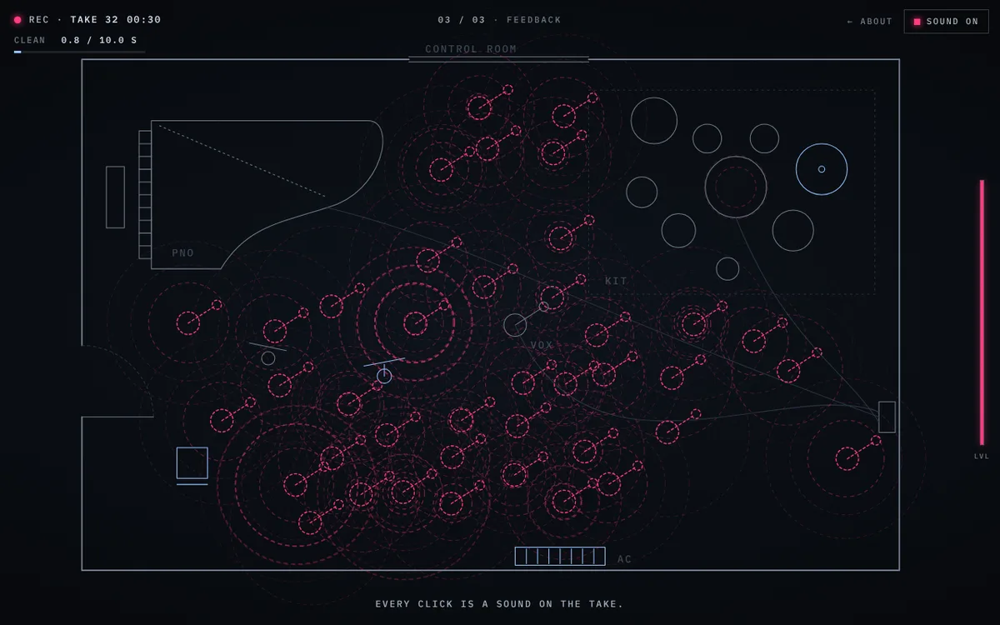
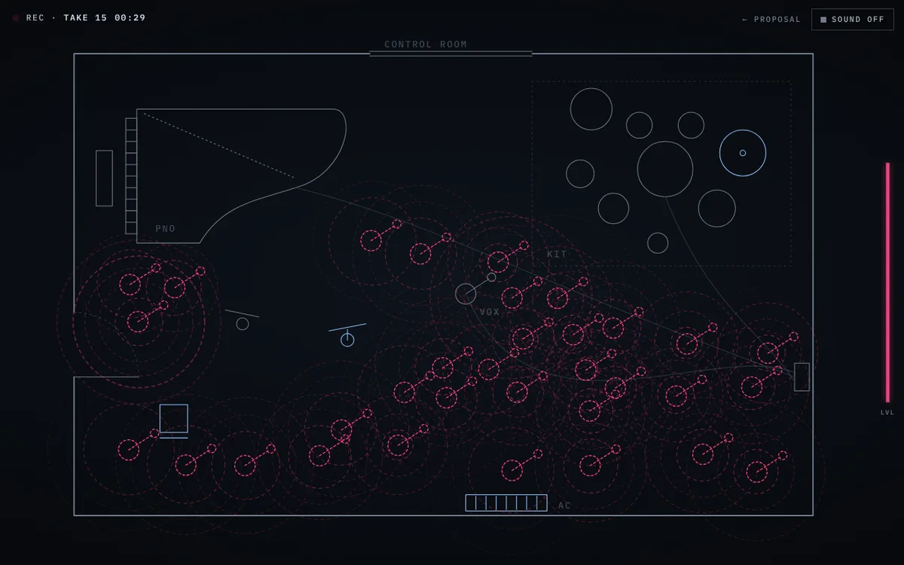
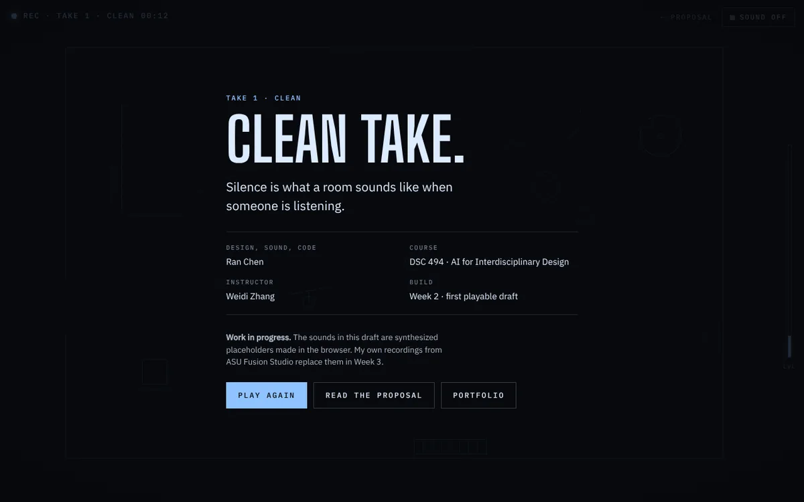
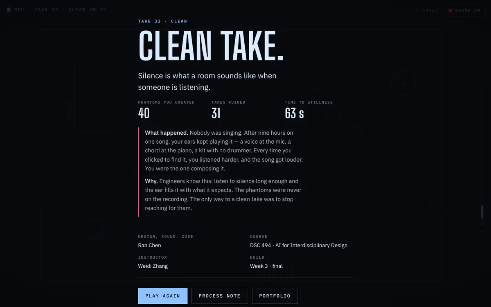
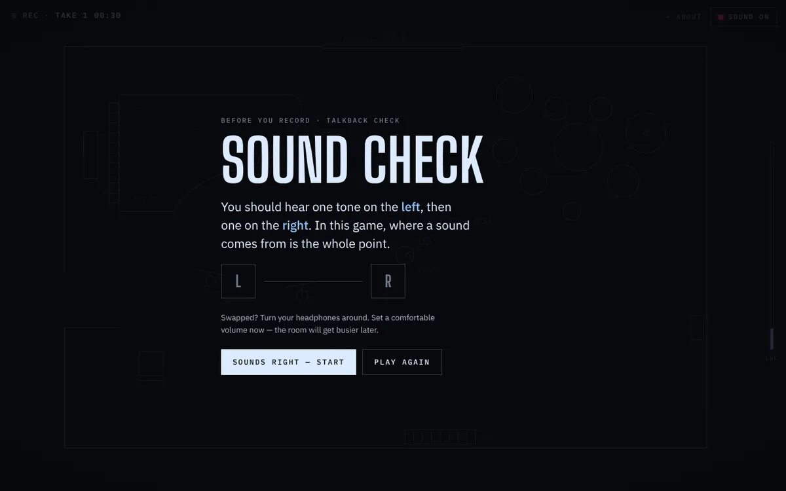
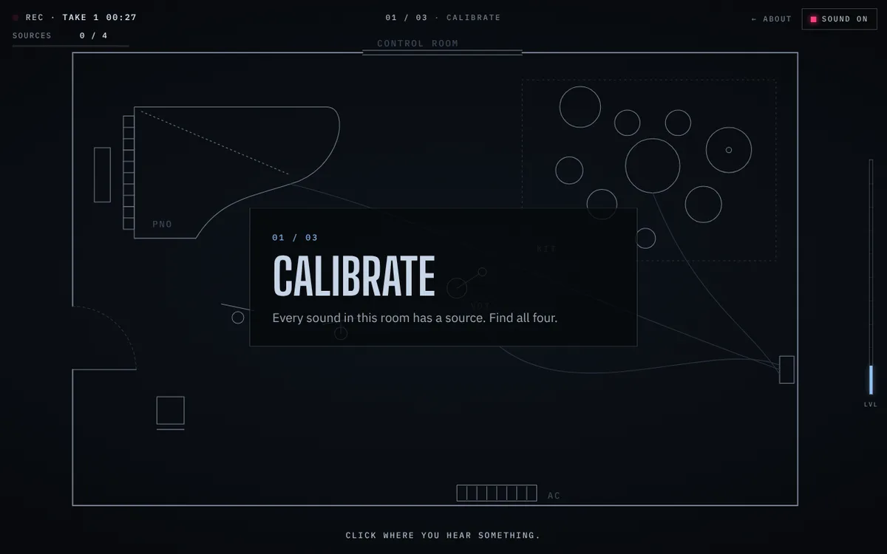

Room Tone
A game about listening too hard. After nine hours recording one song, you have to record thirty seconds of an empty room — but your ears keep playing the song.

- Theme
- Hallucination — auditory, as a recording engineer knows it
- Interaction
- One input: click where you hear something
- Structure
- Sound check · opening · 3 stages · ending
- Built with
- HTML Canvas, Web Audio API · no libraries
- Designer
- Ran Chen — concept, sound, design
Attention is the instrument. The phantoms are the song from tonight's session; every time you reach for them, the song gets louder. The only way to a clean take is to stop listening for it.
What I focused on
Four people played the Week 2 draft without me explaining it. Their comments pointed at the same two problems: the idea was not visible inside the game, and players could not tell what they were working toward.
| Who | What they said or did | What it told me |
|---|---|---|
| Prof. Zhang | Enjoyed the musical interactions, but the overall concept was still unclear. Asked what idea the player explores through the sounds they make, and to make it explicit in the experience. | The concept lived on the proposal page, not in the game. |
| Fandi | Liked that the room became overwhelming and made her unsure what she heard — but had “not figured it out yet.” | Nobody discovered that stopping is the way out. The 85-second hint was far too late. |
| Fatimah | Noticed every click made more sounds and shapes appear; asked for progression or a goal, “rather than just clicking.” | Stage 3 needed a visible goal and a measure of progress. |
| Criss | Suggested a test sound before starting, to check volume and left/right; and moving sounds or echoes as it gets harder. | Position is the whole game — players need to trust their headphones first. |
What I changed
The phantoms became one song
In Week 2 phantoms were random fragments. Now they are the song recorded that night — one melody in D minor at 76 BPM, locked to a beat grid. A few clicks bring back the vocal line; more add piano chords; a crowded room starts a drummer and a bass that are not there. Stillness takes the song apart layer by layer. The player is composing the hallucination without knowing it.
A clean-take meter
Stage 3 now states its goal — ten seconds of the empty room — and shows a CLEAN meter that only rises while you do nothing and turns pink when a click resets it. Players still try to “fix” the room by clicking at first; the meter shows them, without words, what actually works.
Stage titles and earlier hints
Each stage opens with a short title card and a one-line goal, and a stage label stays on screen. Hints arrive at 22, 38 and 55 seconds instead of 85, and only for players who have not found stillness yet.
A talkback check
“Start with sound” now opens a sound check: one tone left, one right, with L/R lights. It doubles as a lesson in the game's only skill — hearing where a sound is.
An ending that says what happened
The credits now show the player's own run — phantoms created, takes ruined, time in the room — and two short paragraphs that name the idea: nobody was singing, and you were the one composing it.
Moving sounds
Criss suggested sounds that move. I kept every source still, because locating them is the skill the game teaches. Escalation now comes from the song's layers and the reverb feedback loop instead.
Before and after





AI tools & my decisions
- Week 1: research partner on the case study; I checked its claims and corrected its reading of Loneliness.
- Week 3: collected the instructor and classmate comments from Canvas, proposed revisions that answer each one, wrote the code changes, and ran automated playthroughs in a headless browser to check every stage on desktop and phone.
- All sounds are synthesized in the browser with Web Audio — no AI-generated audio.
- The concept: auditory hallucination from my own experience as a recording engineer — hearing voices in a noise floor after a long session.
- One input only, and inverting Loneliness: there attention erases others, here it creates them.
- Answering “make the concept clearer” with music, not more text: the phantoms became the session's song, and the player composes it by reaching for it.
- Keeping the exit undiscovered but visible: the goal is stated, the solution is not.
- Which feedback to adopt and which to decline (moving sounds).